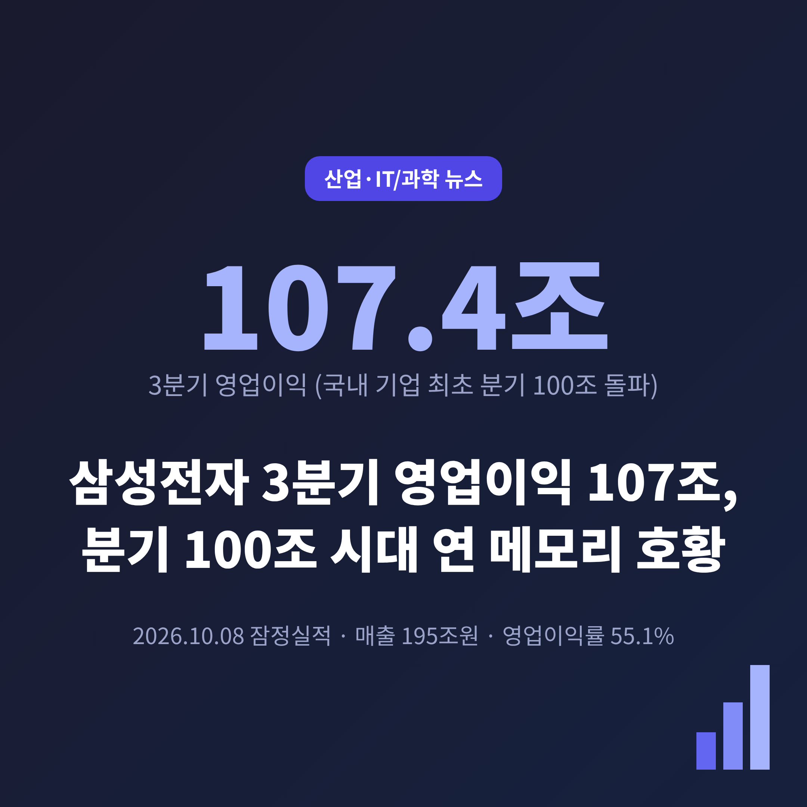
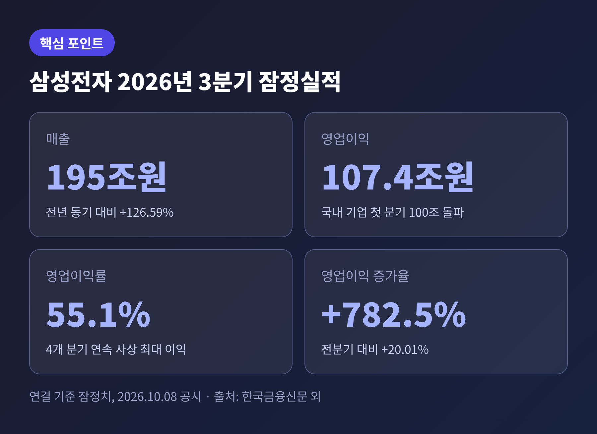
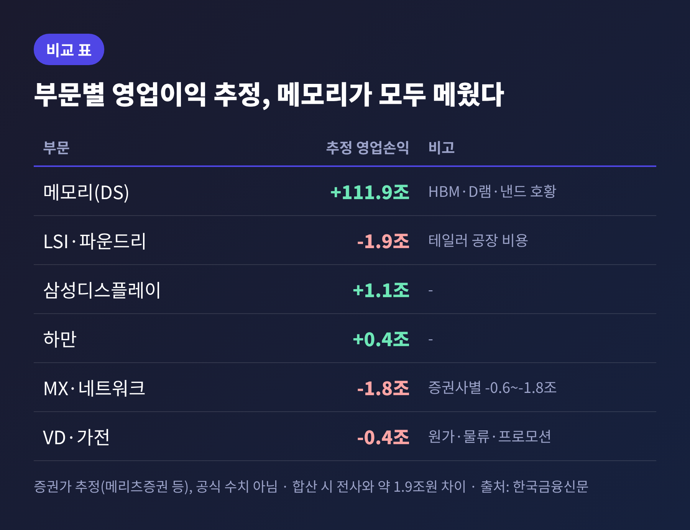
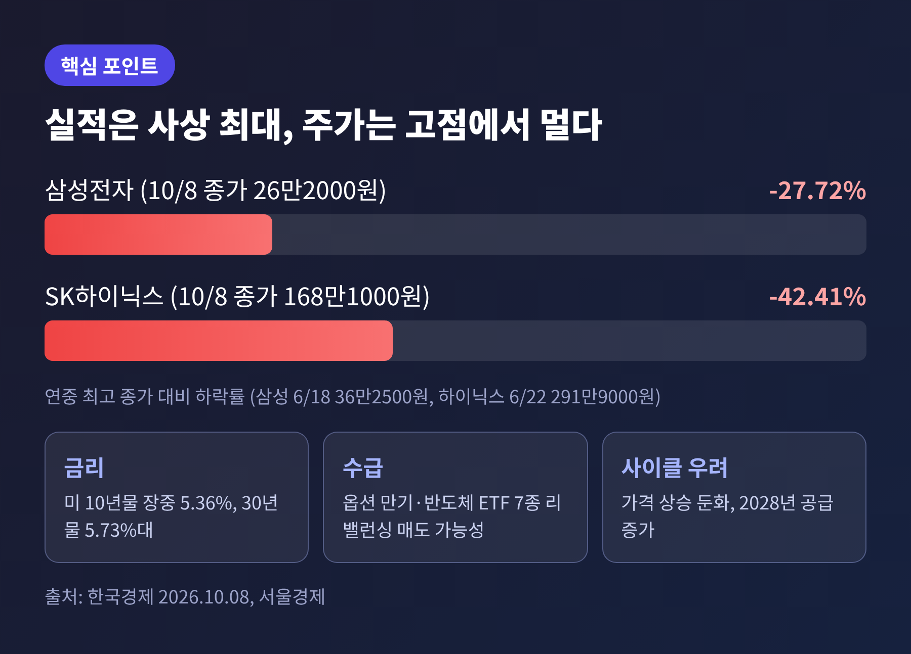
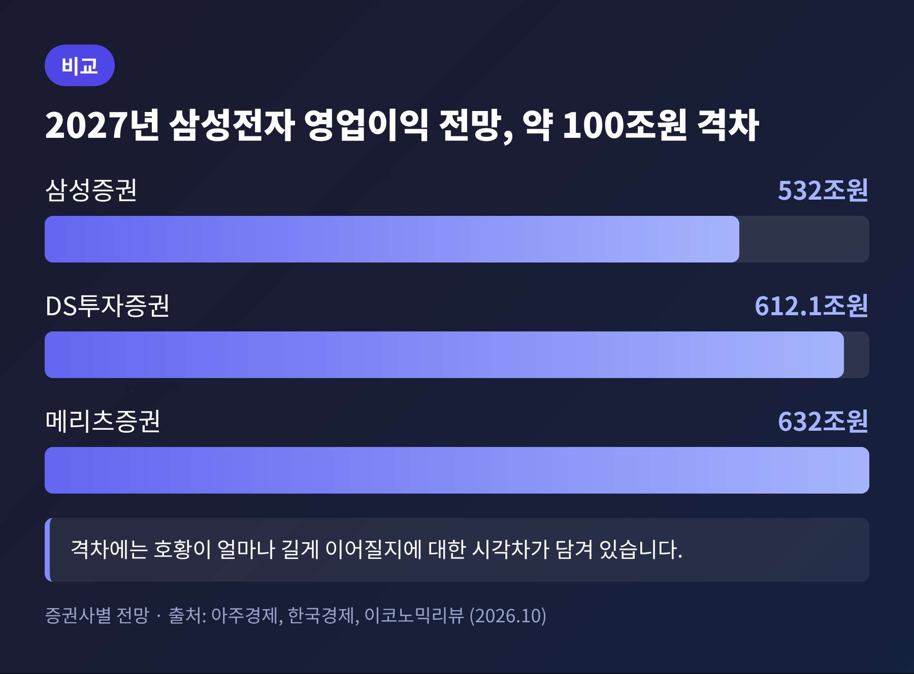
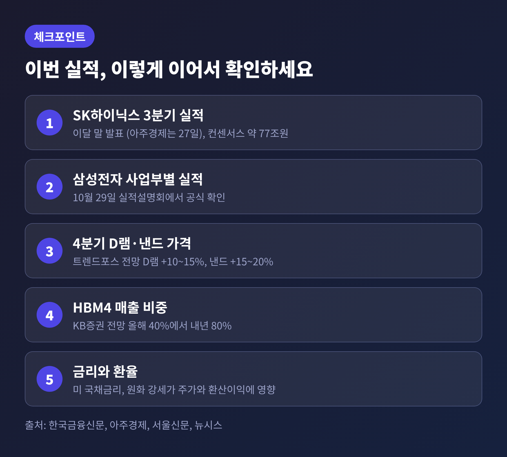

삼성전자가 10월 8일 3분기 연결 잠정실적을 공시했습니다. 매출 195조원, 영업이익 107조4000억원으로 국내 기업 가운데 처음 분기 영업이익 100조원을 넘었습니다. 이 숫자가 무엇을 뜻하는지, 그리고 주가는 왜 오히려 내렸는지 차근차근 정리해 보겠습니다.
삼성전자는 8일 3분기 잠정실적을 내놓았습니다. 결산이 끝나기 전에 투자자 편의를 위해 미리 공개하는 수치입니다.
매출은 195조원입니다. 1년 전보다 126.59%, 직전 분기보다 13.70% 늘었습니다. 영업이익은 107조4000억원으로 1년 전보다 782.5%, 직전 분기보다 20.01% 늘었습니다. 영업이익률은 55.1%입니다. 100원어치를 팔아 55원을 남긴 셈입니다.
시장의 기대도 넘어섰습니다. 집계처에 따라 다르지만 증권가 컨센서스는 106조원 안팎이었고, 실제 숫자는 이를 0.7~1%가량 웃돌았습니다. 영업이익은 4개 분기 연속 사상 최대 기록을 새로 썼습니다.

규모를 가늠해 볼 만한 비교가 있습니다. 올해 3분기까지 누적 영업이익은 254조1000억원으로, 2025년 한 해 영업이익 43조6000억원의 약 5.8배입니다. 한국금융신문 집계입니다. 영문 매체 SiliconANGLE는 엔비디아, 아마존, 구글도 단일 분기에 이만한 이익을 낸 적이 없다고 전했습니다. 달러로는 약 800억 달러에 해당합니다.
삼성전자는 잠정 단계에서 사업부별 숫자를 공개하지 않았습니다. 다만 증권가 추정은 한 방향을 가리킵니다. 반도체를 맡은 DS 부문, 그중에서도 메모리가 이익의 거의 전부를 만들었다는 것입니다. 파이낸셜뉴스가 인용한 업계 분석은 메모리 영업이익을 110조원 안팎으로 봅니다. 전사 이익보다 큰 숫자입니다. 다른 부문의 적자를 메모리가 메우고도 남았다는 뜻입니다.
배경은 AI 데이터센터 투자입니다. 빅테크의 투자가 이어지면서 HBM(고대역폭메모리)과 서버용 DDR5 같은 고성능 D램 수요가 급증했습니다. 메모리 업체들은 생산능력을 HBM과 고부가 서버용 제품에 먼저 배분했고, 그 여파로 범용 D램과 낸드플래시는 공급이 빠듯해졌습니다. 공급은 모자라고 수요는 넘치니 가격이 올랐습니다.
DS투자증권은 3분기 D램 평균판매가격이 전분기보다 19~21% 올랐고, 출하량은 3~4% 늘었을 것으로 추정합니다. 물량보다 가격이 이익을 키운 구조입니다. 같은 증권사는 D램 영업이익률을 83%로 계산했는데, 어디까지나 추정치입니다.
HBM도 한몫했습니다. 삼성전자는 6세대 HBM4 공급을 넓히고 있습니다. 엔비디아의 차세대 가속기 '베라 루빈'에 제품을 공급하고, AMD의 'MI455X'에도 HBM4가 들어간다고 알려졌습니다. KB증권은 삼성전자의 HBM4 매출 비중이 올해 40%에서 내년 80%로 두 배 커질 것으로 내다봅니다.

모든 사업이 좋았던 것은 아닙니다. 메모리 가격이 오르면 삼성전자의 다른 사업은 오히려 원가 부담을 집니다. 스마트폰과 TV, 가전에 들어가는 메모리도 결국 같은 가격표를 따르기 때문입니다.
한국금융신문이 정리한 증권가 추정으로는 MX·네트워크 사업부가 1조8000억원, 영상디스플레이·가전이 4000억원 적자입니다. 다만 추정은 증권사마다 갈립니다. 대신·하나·DS투자증권은 MX·네트워크 손실을 약 6000억원으로, 유안타증권은 9000억원으로, IBK투자증권은 1조1000억원으로 봅니다. 공식 숫자는 29일 실적설명회에서 확인할 수 있습니다.
스마트폰 출하량은 3분기 약 5800만 대로 전분기보다 8~9% 줄었을 것으로 보입니다. TNW는 삼성전자가 10월 초 미국과 한국에서 갤럭시 S26 가격을 100달러 올렸다고 전했습니다. 부품 값 상승분의 일부를 소비자에게 넘기는 셈입니다.
파운드리도 아직 적자입니다. 가동률은 나아지고 있지만 미국 테일러 공장 가동 비용이 부담으로 남았습니다. 한국금융신문은 비메모리 적자를 1조9000억원으로, 뉴시스는 약 1조원으로 추정합니다. 전분기보다 적자 폭이 크게 줄었다는 점에서는 시각이 같습니다.
메모리 업황이 나쁠 때는 완제품 사업이 버팀목이 된다는 말이 흔했습니다. 지금은 반대입니다. 메모리가 너무 잘 팔려서 완제품 사업이 부담을 지는 구조입니다. 한쪽에 이익이 쏠려 있다는 점은 호황의 숨은 약점이기도 합니다.
공시 당일 장 초반 분위기는 나쁘지 않았습니다. 서울경제에 따르면 8일 오전 8시 2분 프리마켓에서 삼성전자는 1.30% 올랐습니다. 그런데 정규장 마감 결과는 달랐습니다. 한국경제 집계로 삼성전자는 2.42% 내린 26만2000원, SK하이닉스는 2.44% 내린 168만1000원에 마쳤습니다. 두 종목 모두 사흘째 하락입니다.
연중 최고 종가와 비교하면 삼성전자는 6월 18일 36만2500원에서 27.72%, SK하이닉스는 6월 22일 291만9000원에서 42.41% 낮은 수준입니다. 실적은 사상 최대인데 주가는 고점에서 멀어져 있습니다.
기사에서 짚은 원인은 세 가지입니다.
손인준 유진투자증권 연구원은 "메모리 업황은 여전히 시장의 예상보다 강하지만, 시장의 시선과 실제 업황 사이의 간극을 메우는 데에는 시간이 필요할 것"이라고 말했습니다. 이익은 이미 났는데 시장은 그 지속성을 아직 믿지 못한다는 해석입니다.

가장 가까운 확인 지점은 10월 말입니다. 삼성전자는 29일 실적설명회에서 사업부별 실적과 전망을 공개합니다. SK하이닉스 3분기 영업이익 컨센서스는 77조원 안팎으로, 영업이익률은 78%대로 계산됩니다. 서울신문은 이 이익률이 80%에 닿을지가 관전 포인트라고 짚었습니다. 발표일은 아주경제가 27일로, 서울신문은 이달 말로 적었습니다.
4분기 전망도 밝은 쪽입니다. 트렌드포스는 4분기 범용 D램 가격이 전분기보다 10~15%, 낸드 가격이 15~20% 오를 것으로 봅니다. 하나증권은 주요 D램 3사의 증설을 감안해도 공급 부족이 2028년까지 이어질 가능성이 높다고 분석합니다. 공급이 가장 모자란 품목으로는 LPDDR을 꼽았습니다.
내년 눈높이는 더 높습니다. 다만 증권사별 편차가 큽니다.

삼성증권은 2027년 영업이익을 532조원으로, DS투자증권은 612조원으로, 메리츠증권은 632조원으로 제시했습니다. 약 100조원 차이입니다. 어느 전망이 맞는가보다 눈여겨볼 대목은 '얼마나 오래 가는가'에 대한 시각차가 이 폭에 담겨 있다는 점입니다.
리스크도 분명합니다. 호황이 얼마나 길어질지는 아무도 장담하지 못합니다. 업체들의 증설 속도와 빅테크의 AI 투자 속도에 따라 수급이 바뀔 수 있습니다. 원화 강세는 달러 매출의 원화 환산액을 깎습니다. SiliconANGLE는 미국의 해외 칩 제조사 대상 신규 관세 가능성과 중국의 추격도 위험 요인으로 꼽았습니다.

정리하면 이렇습니다. 이번 실적은 삼성전자 전체가 고르게 좋아졌다는 신호가 아닙니다. AI 인프라 수요가 메모리 한 곳으로 이익을 몰아준 결과에 가깝습니다. 그래서 확인할 것도 단순합니다. 29일 설명회에서 사업부별 숫자가 어떻게 나오는지, 4분기 가격이 정말 오르는지, HBM4 비중이 예고대로 커지는지를 보시면 됩니다.
결국 남는 것은 하나입니다. "사상 최대 실적이 곧 주가의 방향은 아니다."
이익이 정점인지 중간 기착지인지는 아직 아무도 모릅니다. 다만 분기 100조원이라는 숫자가 한국 산업의 무게중심이 어디로 옮겨 갔는지를 분명히 보여준다는 점만큼은 부인하기 어렵습니다.
※ 이 글의 수치는 2026년 10월 8~9일자 국내외 보도를 기준으로 하며, 잠정실적이므로 확정 결산과 다를 수 있습니다. 부문별 숫자는 증권가 추정치입니다. 투자 판단의 근거로 삼기 위한 글이 아닙니다.